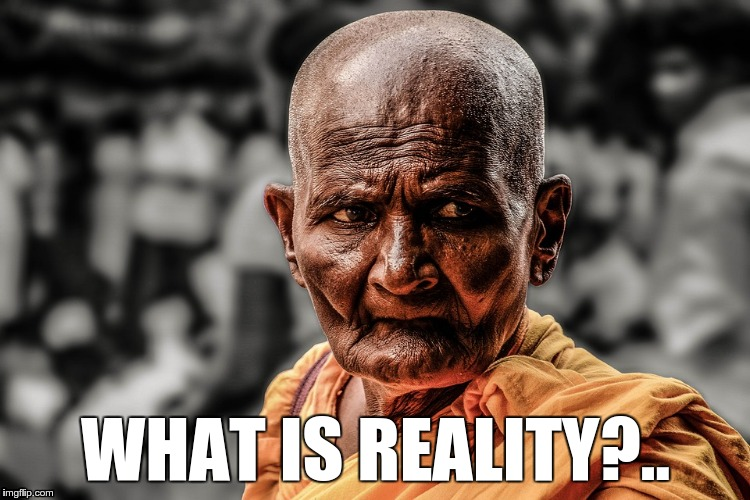
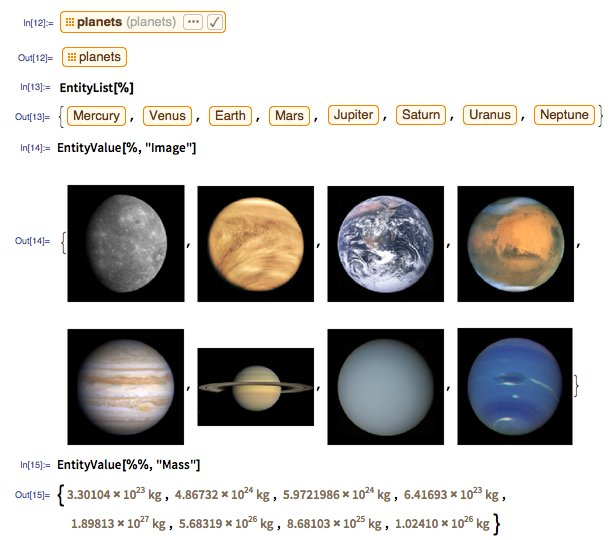
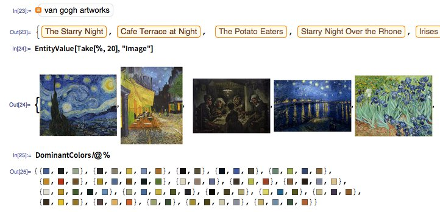
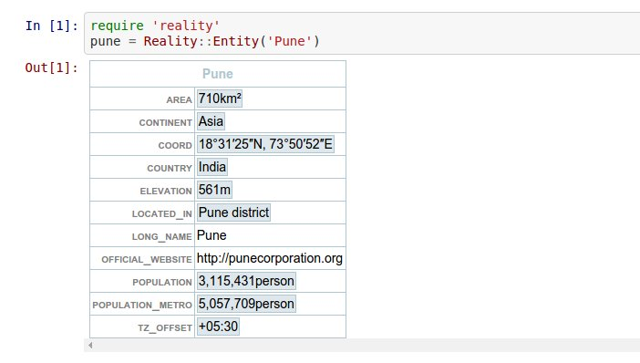

The World Should Be Computable
* Includes outdated memes, random photos and dull jokes
For VilniusRB, Feb 2017
Victor Shepelev (zverok)
whoami
- Victor Shepelev, 34 yrs, Kharkiv, Ukraine;
- 15+ years of development experience;
- Ruby developer, Ruby mentor, Ruby enthusiast;
- (also poet).
 zverok.github.io
zverok.github.io
I want to talk about reality
gem install reality
Reality is like…
1 2 3 4 5 6 7 8 9 10 |
v = Entity('Vilnius') v.area # => #<Reality::Measure(401 km²)> v.area / v.country.area # => 0.006 v.coord.distance_to(Entity('Kharkiv')) # => #<Reality::Measure(907 km)> v.coord.weather # => #<Reality::Weather(-10°C, Clouds)> |
— So, is it some kind of geoinformation API?..
— Nope.
Also, reality is like…
1 2 3 4 5 6 7 8 9 10 11 12 13 |
ruby = Entity('Ruby (programming language)') ruby.developers.first # => #<Reality::Entity?(Yukihiro Matsumoto)> ruby.developers.first.age_at(ruby.created_at) # => 29 Entity('Chewbacca').describe # affiliations: #<Reality::List[Galactic Republic?, Rebel Alliance?, New Republic (Star Wars)?]> # fictional_universe: "Star Wars Expanded Universe" # occupations: ["mechanic"] # portrayer: #<Reality::Entity?(Peter Mayhew)> # species: #<Reality::Entity?(Wookiee)> |
— So, is it some dataset?
— Not at all!
Then…

Inspirations: Wolfram Language

Inspirations: Wolfram Language

Now, back to reality!
Currenty (tree/master) it is
a table of contents
(loose, yet computable)
to all “common sense” knowledge
through Wikipedia/Wikidata.
Now, back to reality!
Yet, by design (tree/develop), it is:
a table of contents for common sense knowledge,
enriched with data from other popular APIs,
and easily plugged in with other “real world” data.
In other words,
reality is (or would be) a foundation for all “real world” API and datasets integration.
Why it is important?
…Or, at least, interesting?
Because Common knowledge and Assisted intelligence.
E.g.: what human know
…and computer don’t
…yet can.
- — Ticket booking system? — Should know source and destination climate, currencies, visa requirements etc.
- — Small bookshop? — What about author biographies, their contemporaries, similar styles and probably historical periods?
- — Next Personal ToDoList? — Unit conversions, timezones, weather, transportation…
- …
- TODO: more cool examples! ← Yep, left here consciously
The road to reality*
* Tired of pun pictures. Imagine it yourself.
Entire world is your (irregular) database
1. Tables of contents for common knowledge
2. Including specific facets of knowledge
3. Including local and rare data sources
Tables of contents (for common knowledge)
- Wikipedia: comprehensive, yet poorly structured;
- Wikidata: structured (small-ish) part of Wikipedia;
- OpenStreetMap: everything (?) about geography.
Tables of contents: Examples*
* Potential code here and below! Works sometimes on my local machine. Or not.
1 2 3 4 5 6 7 8 9 10 11 12 |
v = Reality.wikipedia.get('Vilnius') # => #<Reality::Entity wikipedia:Vilnius, wikidata:Q216?> v.water_bodies # => [#<Reality::Entity wikipedia:Neris, wikidata:Q207903>, # #<Reality::Entity wikipedia:Vilnia, wikidata:Q661684>] v.water_bodies.last.length # => #<Reality::Measure 79.6 km> v.country.load! # => #<Reality::Entity wikipedia:Lithuania, wikidata:Q37, openstreetmap:72596> v.country.waterways # => [#<Reality::Entity openstreetmap:2824450, wikidata:Q207903?, wikipedia:Neris?> .... |
Tables of contents: Challenges and solutions
- Challenge: Wikipedia is the most powerful source yet poorly structured and hard to parse
- Solution: Semantic Wikipedia parser, named Infoboxer, developed
- Challenge: Wikidata is structured, yet has weird API and lot less information then Wikipedia (yet?)
- Solutions: Use Wikidata+Wikipedia, query Wikidata with dedicated SPARQL inteface
- Challenge: OpenStreetMap has all (?) the geodata, yet quirky search APIs
- Solution: Yet to come!
Facets of knowledge
Query specific APIs and datasets for:
- Movies,
- Books,
- Historical periods,
- Restaurants,
- Catastrophes,
- ………..
Facets of knowledge: Examples*
* Still not a really working code. Sorry :(
1 2 3 4 5 6 7 8 9 10 11 12 13 14 15 16 17 |
vilnius.sightseeings # => from Wikivoyage # => [#<Reality::Entity wikivoyage:Gediminas Castle>, # #<Reality::Entity wikivoyage:Three Crosses Hill>, # #<Reality::Entity wikivoyage:Vilnius Cathedral> ... Reality.wikipedia.get('Alice in Wonderland').text # => from Project Guttenberg .tokenize.tap { |words| SomeFancyWordCloud.build(words) } e = Reality.wikipedia.get('Japan').earthquakes(magnitude_gte: 9) # => from USGS # => [#<Reality::Entity usgs:official20110311054624120_30>] e.first.describe # magnitude: 9.1 # place: "near the east coast of Honshu, Japan" # location: #<Geo::Coord 38.297,142.373> # time: 2011-03-11 05:46:24 UTC |
Facets of knowledge: Challenges and solutions
- Challenge: Each API has its own structure of response and request
- Solution: Declarative API client description (TLAW gem)
- Challenge: Amount and structure of data is irregular
- Solution: Simple, powerful and homogenous structure:
Observations
Demo of Observations
Before:
1 2 3 4 5 6 7 8 9 10 11 |
ForecastIO.forecast(37.8267, -122.423) # => Hashie with summary, # 'hourly'/'daily'/'minutely' keys contain Hashies with summaries and data arrays OpenWeather::Forecast.city("Vilnius, LT") # => hash, # 'list' key contains an array of hashes of hashes, date is number Weather.lookup(9830, Weather::Units::CELSIUS) # => Weather::Response == set of deeply nested objects, NOT hashes |
Demo of Observations
After:
1 2 3 4 5 6 7 8 9 |
w = vilnius.forecast_io # => #<Reality::Entity forecast_io:54.68,25.28> w.temperature # => -17°C -- it is a Reality::Observation w.temperature.at(Date.parse('2016-09-10')) # => 23°C w = vilnius.open_weather_map # => #<Reality::Entity open_weather_map:593116> w.temperature # => -16°C -- data differs, API is the same |
Local APIs
1 2 3 4 5 6 7 8 9 10 11 |
vilnius.schools # => from opendata.lt # => [#<Reality::Entity opendata.lt/vilniaus-ugdymo-istaigos:140>, # #<Reality::Entity opendata.lt/vilniaus-ugdymo-istaigos:139>, # #<Reality::Entity opendata.lt/vilniaus-ugdymo-istaigos:188> # ... vilnius.schools.first.describe # title: "Žvangutis" # address: "Rinktinės g. 38A, Vilnius" # built_at: #<Date: 1987-12-12> |
…If only all local data could be available as an API!
And…
And beyond: necessary infrastructure
And beyond: developing the approaches
- github.com/molybdenum-99/tlaw – declarative API wrapper;
- discoverability of “infinite” and irregular data systems;
- scientific simplicity and power of “observations”.
And beyond: fancy console
IRuby: Ruby engine for Jupyther/IPython “scientific console”

Join the reality!
1 2 3 4 5 6 7 8 9 10 11 12 13 14 |
matrix = Reality.wikipedia.get('The Matrix') matrix.describe # actors: #<Reality::List[Hugo Weaving?, Keanu Reeves?, Laurence Fishburne?, Carrie-Anne Moss?, Joe Pantoliano?, Gloria Foster?, Robert Taylor?, Marcus Chong?, Paul Goddard?, Matt Doran?, Ada Nicodemou?, Steve Dodd?, Anthony Ray Parker?, Paul Goddard?, Belinda McClory?, Julian Arahanga?, Jeremy Ball?, Rowan Witt?]> # awards: #<Reality::List[Academy Award for Best Sound Mixing?, Saturn Award for Best Science Fiction Film?, Academy Award for Best Film Editing?, Academy Award for Best Visual Effects?, Academy Award for Best Sound Editing?, National Film Registry?]> # directors: #<Reality::List[The Wachowskis?]> # genres: ["cyberpunk", "action film", "science fiction film", "post-apocalyptic film", "thriller film", "action thriller", "dystopian film", "science fiction action film"] # published_at: #<Date: 1999-03-31> matrix.actors.map { |a| [a.name, a.age_at(matrix.published_at)] }.to_h # => {"Hugo Weaving"=>38, "Keanu Reeves"=>34, "Laurence Fishburne"=>37, "Carrie-Anne Moss"=>31, "Joe Pantoliano"=>47, "Gloria Foster"=>65, "Robert Taylor (Australian actor)"=>35, "Marcus Chong"=>31, "Paul Goddard"=>39, "Matt Doran"=>23, "Ada Nicodemou"=>21, "Steve Dodd"=>70, "Anthony Ray Parker"=>40, "Paul Goddard (actor)"=>36, "Belinda McClory"=>30, "Julian Arahanga"=>26, "Jeremy Ball"=>31, "Rowan Witt"=>10} matrix.quotations(author: 'Morpheus').grep(/Welcome/) # => "Welcome…to the desert of the real." |
Join the reality!
Links:
- github.com/molybdenum-99/reality is the main repo;
- reality-show.molybdenum.io is an (outdated, yet working) online demo;
- I am zverok (zverok.offline@gmail.com, zver_ok@Skype, gitter.im/zverok), feel free to contact me.
Necessary gratitudes:
- Sergii Mostovyi is my dear colleague, who pushed and inspired me to release first version, and currently develops reality-show online demo;
- The Ruby Association who kindly provided me with grant for the first version; to be honest, the trust was more important than the money (spent them already, BTW);
- Vilnius Ruby Group for inviting me to talk about those impractical matters!